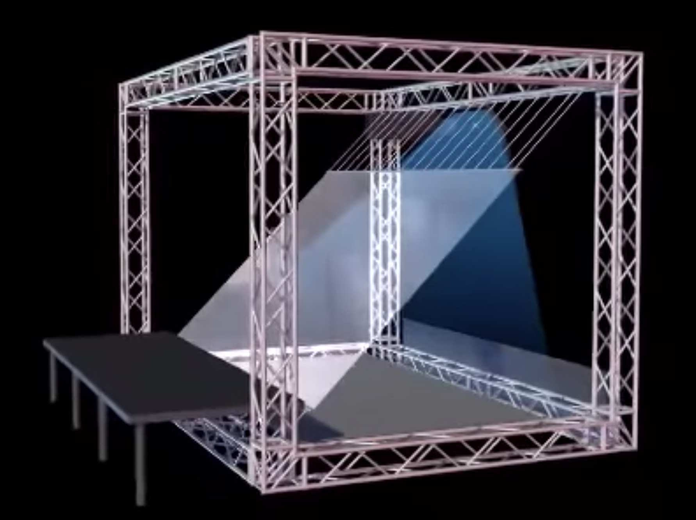

Can user input of data be combined to form a collective piece? Just like our data and information is sold and collected at quantum levels.
Can a Pepper's Ghost hologram be displayed that is a figure created by a conglomerate of photos?
Keywords: Data input, user input, collective, collaborative art, randomizer
